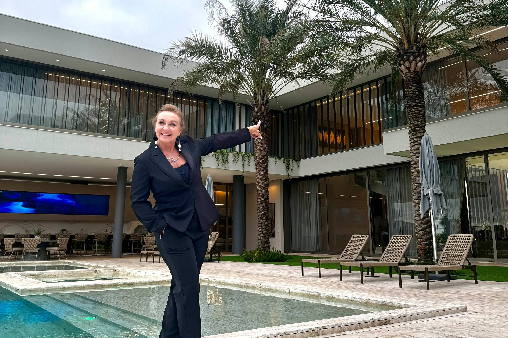
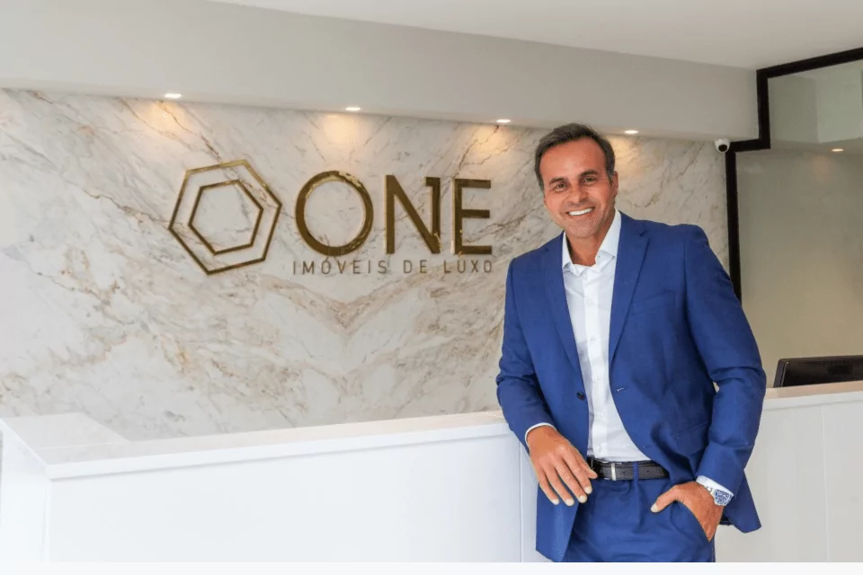
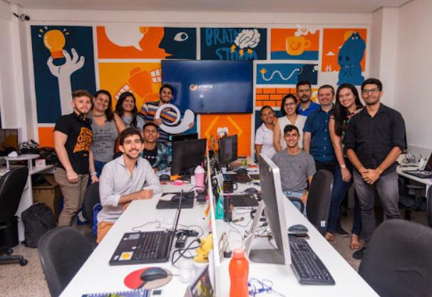

A presença que vende. Transformamos sua identidade em resultado.
Impulsionamos marcas do mercado imobiliário com excelência, sofisticação e estratégias personalizadas. Construímos posicionamento com propósito para que você venda mais.
Construa sua autoridade agoraResultados Reais
Projetos de Destaque

Branding Pessoal
Corretora de Alto Padrão
Reposicionamento de marca, criando uma identidade visual sofisticada e uma narrativa que atrai clientes qualificados.
Performance
Lançamento Imobiliário
Estratégia digital completa, desde a gestão de tráfego até a produção de conteúdo visual, resultando em 100% das unidades vendidas.

Identidade Visual
Imobiliária de Luxo
Criação de uma nova identidade visual que reflete a exclusividade e o alto padrão dos imóveis da empresa.
Mais que uma agência, aliados estratégicos.
A SEID nasceu da união de técnica, criatividade e resultado. Entendemos que o mercado está cheio de profissionais incríveis sendo mal percebidos. Nossa missão é mudar isso.
